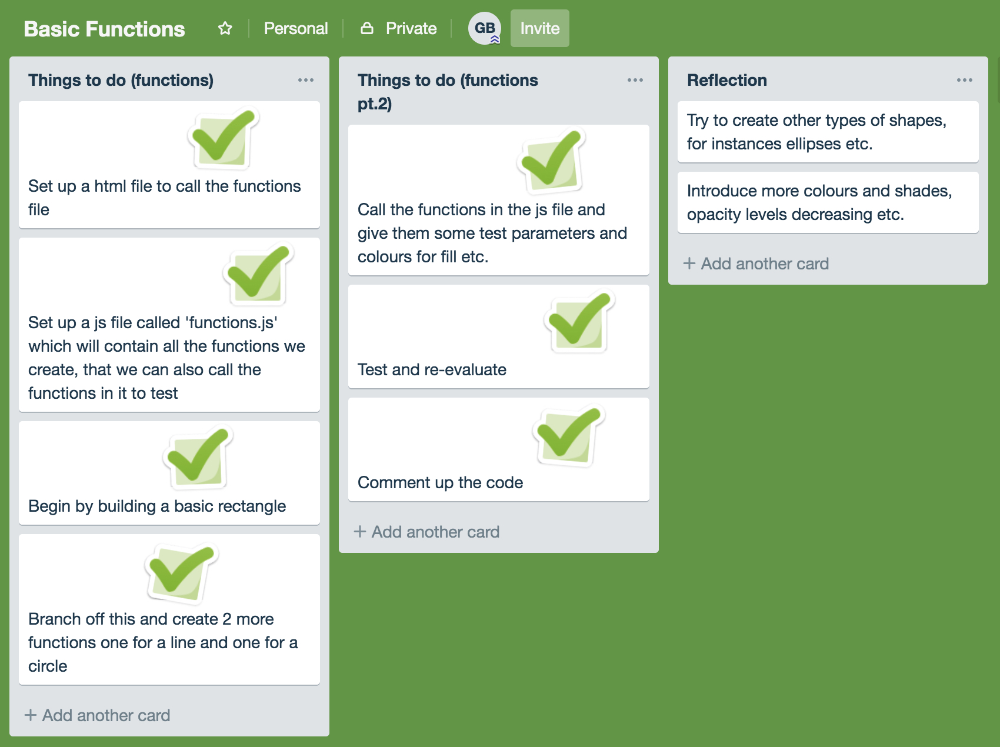
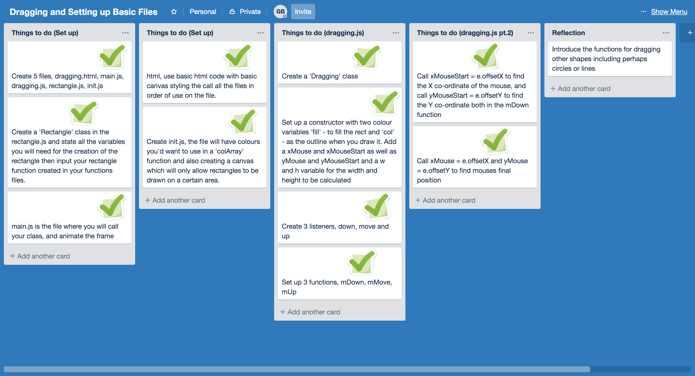
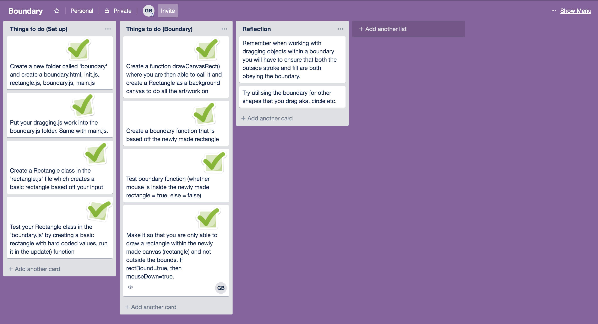

My aim for this assessment is to create a drawing application. Which is easily accessable and easy to use. It should allow you to draw shapes and change colours by the click of a button.
Within this Sprint I want to be able to draw a rectangle within a defined area on a canvas (within a boundary).
Below is my Trello board for this page:
Below is my Trello board for this page:
Below is my Trello board for this page:
This video is a test for checking my boundary check works. I clearly move the mouse around the screen to inspect where on the console it reads 'true' or 'false'. Testing all the edges and corners to ensure it extends to all areas and won't be able to be broken.
In this video you will be able to see me testing the dragging functionl Checking that it obeys the boundary function and will only allow a rectangle to be drawn if it is within the boundarys and the boundary check is 'true'.